class Algorithms {
public:
Algorithms lecture {
.author = "Р.А. Нестеров"
.year = "2026/27"
.course = "НИУ ВШЭ ПИ, 2 курс"
};
// 01. Корректность циклического алгоритма
bool isCycleCorrect();
void insertionSort(std::vector<int>& arr);
int gcdEuclidean(int a, int b);
int factorial(int n);
// 02. Точная функция временной сложности алгоритма int exactTimeComplexity(std::vector<int>& arr);// 03. Порядок роста точной функции сложности void orderOfGrowth();
->01
01.00
цель и задачи курса
информационная поддержка: SmartLMS,
канал и лекционные материалы
общие правила работы и система оценки:
элементы контроля и автоматические оценки
тематическое наполнение первого семестра
void setCourseObjectives();
что мы планируем достичь к окончанию двух семестров
развить навыки анализа производительности алгоритмов, работающих с различными структурами данных, и выбора оптимальных решений в рамках конкретных практических задач разработки программного обеспечения
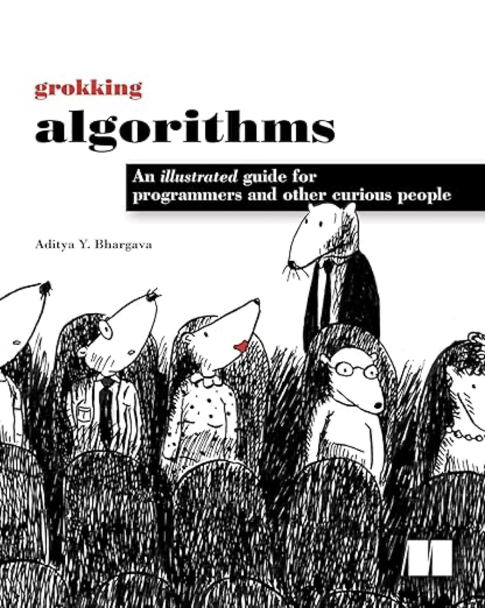
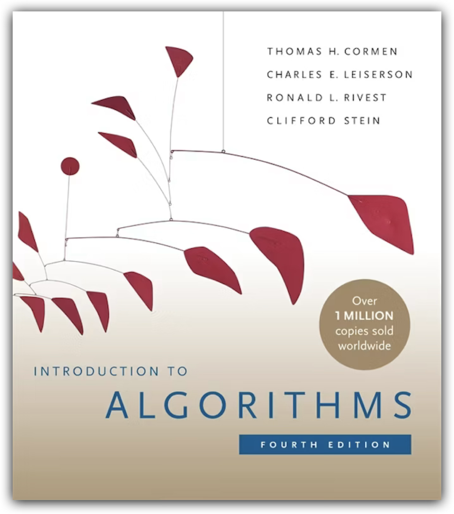
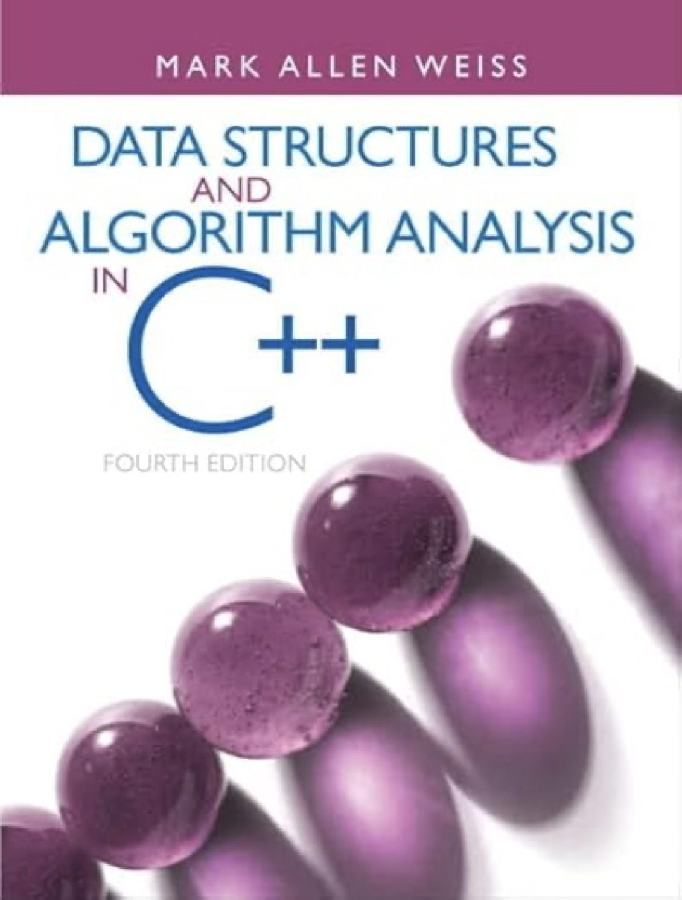
void setCourseAssessment();
компоненты и правила формирования итоговой оценки за семестр
домашние работы, КР, квизы на лекциях и практиках
самостоятельные работы, решение «у доски», ДЗ и прочие активности
устный ответ на три вопроса в рамках материалов семестра с возможностью автомата
void setCourseAssessment();
условные траектории получения итоговой оценки за семестр
⚡️
автомат «8 баллов» за семестр
📝
оценка после устного экзамена
⚠️
итоговая оценка без 30%
01.01
сортировка вставками, вычисление факториала
и наибольшего общего делителя
поиск и применение инварианта для обоснования
корректности циклического алгоритма
инициализация, итерация и выход из цикла
контрактное программирование в C++26
#include <vector>
void insertionSort(std::vector<int>& arr) {
int N = arr.size();
for (int i = 1; i < N; ++i) {
int key = arr[i];
int j = i - 1;
while (j >= 0 && arr[j] > key) {
arr[j + 1] = arr[j];
j = j - 1;
}
arr[j + 1] = key;
}
}
arr
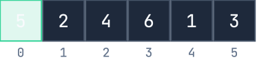
#include <vector>
void insertionSort(std::vector<int>& arr) {
int N = arr.size();
int comparisons = 0;
int swaps = 0;
for (int i = 1; i < N; ++i) {
int key = arr[i];
int j = i - 1;
while (j >= 0 && arr[j] > key) {
arr[j + 1] = arr[j];
j = j - 1;
++comparisons;
++swaps;
}
arr[j + 1] = key;
++comparisons;
}
}
arr
key = arr[1]:
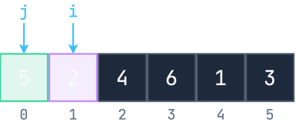
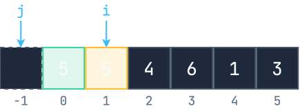
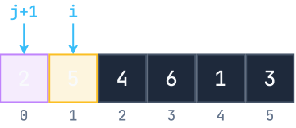
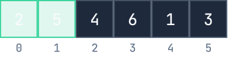
key = arr[2]:
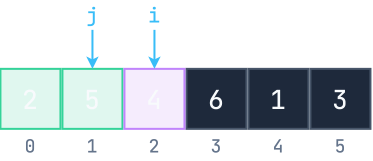
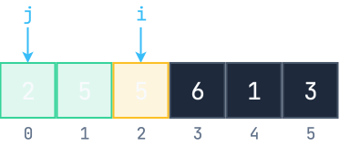
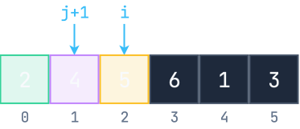
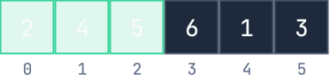
key = arr[3]:
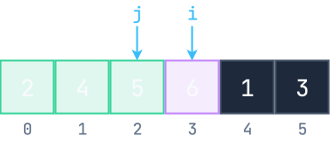
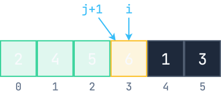
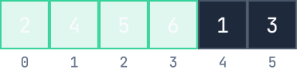
key = arr[4]:
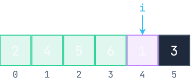
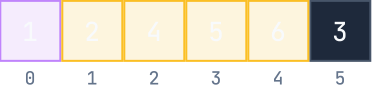
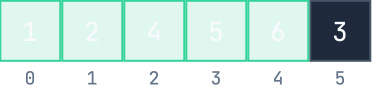
key = arr[5]:
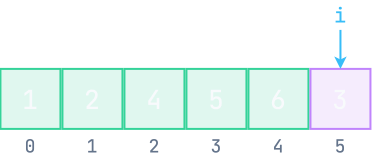
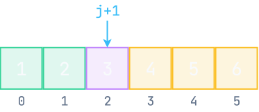
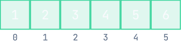
bool isCycleCorrect();
как обосновать корректность циклического алгоритма
#include <vector>
void insertionSort(std::vector<int>& arr) {
int N = arr.size();
for (int i = 1; i < N; ++i) {
int key = arr[i];
int j = i - 1;
while (j >= 0 && arr[j] > key) {
arr[j + 1] = arr[j];
j = j - 1;
}
arr[j + 1] = key;
}
}
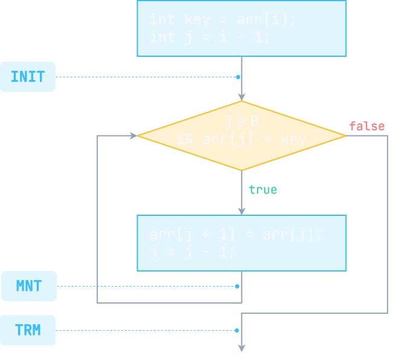
INIT инициализация
выполнение инструкций до входа
в цикл для его запуска
MNT сохранение
выполнение тела цикла
TRM завершение
выход из цикла
bool isCycleCorrect();
как обосновать корректность циклического алгоритма
#include <vector>
void insertionSort(std::vector<int>& arr) {
int N = arr.size();
for (int i = 1; i < N; ++i) {
int key = arr[i];
int j = i - 1;
while (j >= 0 && arr[j] > key) {
arr[j + 1] = arr[j];
j = j - 1;
}
arr[j + 1] = key;
}
}
:: определение 01.01
инвариант цикла — это условие, предикат $P$, истинность которого сохраняется при инциализации, при выполнении тела, а также при завершении цикла
какова цель? что уже вычислено? что осталось вычислить?
📝 составить утверждение о корректности
🔎 найти инвариант $P$ цикла
💡 обосновать сохранение истинности $P$
#include <vector>
void insertionSort(std::vector<int>& arr) {
int N = arr.size();
for (int i = 1; i < N; ++i) {
int key = arr[i];
int j = i - 1;
while (j >= 0 && arr[j] > key) {
arr[j + 1] = arr[j];
j = j - 1;
}
arr[j + 1] = key;
}
}
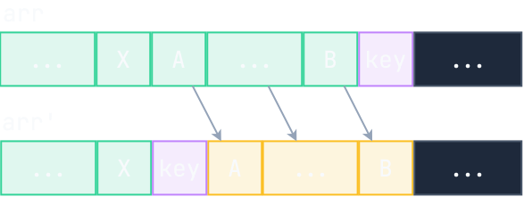
∴ утверждение 01.01
для любого массива arr длины $N \ge 1$ верно, что алгоритм insertionSort упорядочит элементы входного массива в порядке возрастания
формально: $\forall i \in [0, N-2] \colon arr[i] \le arr[i+1]$
∵ доказательство
корректность insertionSort опирается на инвариант внешнего цикла for:
$P_{\mathrm{FOR}} =\{\, \forall k \in [0, i-2]\colon arr[k]\le arr[k+1]\, \}$
$P_{\mathrm{FOR}} = \{$ массив $arr[0..i-1]$ отсортирован $\}$
$i=1 \Rightarrow arr[0..i-1]=arr[0..0]=arr[0]$ тривиально отсортирован
сдвиг, корректность которого опирается на инвариант $P_2$ цикла while:
$P_{\mathrm{WHILE}} = \{ \, arr[j+1..i-1] \longrightarrow arr[j+2..i]$ сохраняет порядок $\}$
$i=N \Rightarrow arr[0..i-1]=arr[0..N-1] \Rightarrow$ массив отсортирован
📝 составить утверждение о корректности
🔎 найти инвариант $P$ цикла
💡 обосновать сохранение истинности $P$
#include <iostream>
unsigned long long factorialLoop(int n) {
if (n < 0) return 0;
unsigned long long fact = 1;
for (int i = 0; i <= n; ++i) {
fact *= i;
}
return fact;
}
int main() {
std::cout << factorial(5);
return 0;
}
$n! = 1 \cdot 2 \cdot . . . \cdot n$
$n! = (n-1)!\cdot n$
∴ утверждение 01.02
для любого целого неотрицательного числа $n$ верно, что алгоритм
factorialLoop возвращает корректное значение $n!$
формально: $\forall n \ge 0 \colon \mathrm{fact} = n!$
∵ доказательство
корректность вычисления факториала опирается на инвариант цикла for:
$P =\{\, \forall i \in [0, n]\colon \mathrm{fact} = (i-1)! \,\}$
$P = \{$ переменная $\mathrm{fact}$ хранит промежуточный факториал $\}$
$i=1 \Rightarrow \mathrm{fact} = (i-1)! = 0! = 1 \Rightarrow$ инвариант $P$ тривиально выполнен
строка 6: $\mathrm{fact} =
\mathrm{fact} \cdot i = (i-1)!\cdot i = i!$
строка 5: $i = i + 1 \Rightarrow \mathrm{fact} = i! = ((i+1)-1)! = (i_{\mathrm{new}} - 1)!$
$i=n+1 \Rightarrow \mathrm{fact} = ((n+1)-1)! = n! \Rightarrow$ факториал вычислен
📝 составить утверждение о корректности
🔎 найти инвариант $P$ цикла
💡 обосновать сохранение истинности $P$
#include <iostream>
int gcdEuclidean(int a, int b) {
if (a = 0) return b;
if (b = 0) return a;
while (a != b) {
if (a > b) a -= b;
else b -= a;
}
return a;
}
int main() {
std::cout << gcdEuclidean(104, 24);
return 0;
}
$\mathrm{НОД}(a, b) = \mathrm{НОД}(b, a)$
$\mathrm{НОД}(a-b, b) = \mathrm{НОД}(a, b)$
∴ утверждение 01.03
для любой пары целых неотрицательных чисел $a$ и $b$ верно, что алгоритм gcdEuclidean возвращает корректное значение их наибольшего общего делителя
формально: $\forall a,b \ge 0 \colon a = \mathrm{НОД}(a,b)$
∵ доказательство
корректность вычисления НОДа опирается на инвариант цикла while:
$P = \{\, \mathrm{НОД}(a, b) = \mathrm{НОД}(a_0, b_0) \,\}$, где $a_0$ и $b_0$ — начальные значения $a$ и $b$
$a=a_0, b=b_0 \Rightarrow \mathrm{НОД}(a, b) = \mathrm{НОД}(a_0, b_0)$
$a > b \Rightarrow \mathrm{НОД}(a-b, b) = \mathrm{НОД}(a, b) = \mathrm{НОД}(a_0, b_0)$
$b > a \Rightarrow \mathrm{НОД}(a, b-a) = \mathrm{НОД}(a, b) = \mathrm{НОД}(a_0, b_0)$
$a = b \Rightarrow \mathrm{НОД}(a, a) = a = \mathrm{НОД}(a_0, b_0)$
вопрос все о той же сортировке вставкам...
* клик по ответу покажет, верный ли он
условия являются инвариантами, так как сохраняют свою истинность, однако не подходят для обоснования корректности
#include <vector>
void insertionSort(std::vector<int>& arr) {
int N = arr.size();
for (int i = 1; i < N; ++i) {
int key = arr[i];
int j = i - 1;
while (j >= 0 && arr[j] > key) {
arr[j + 1] = arr[j];
j = j - 1;
}
arr[j + 1] = key;
}
}
bool isCycleCorrect();
внедрение инструкций assert или static_assert в программный код
#include <numeric>
#include <cassert>
int gcdEuclidean(int a, int b) {
assert(a > 0 && b > 0);
if (a = 0) return b;
if (b = 0) return a;
int a0 = a, b0 = b;
while (a != b) {
assert(std::gcd(a, b) == std::gcd(a0, b0));
assert(a > 0 && b > 0);
if (a > b) a -= b;
else b -= a;
}
assert(a == std::gcd(a0, b0))
return a;
}
bool isCycleCorrect();
внедрение инструкций assert или static_assert в программный код
#include <numeric>
#include <cassert>
int gcdEuclidean(int a, int b) {
assert(a > 0 && b > 0);
if (a = 0) return b;
if (b = 0) return a;
int a0 = a, b0 = b;
while (a != b) {
assert(std::gcd(a, b) == std::gcd(a0, b0));
assert(a > 0 && b > 0);
if (a > b) b -= a;
else a -= b;
}
assert(a == std::gcd(a0, b0))
return a;
}
bool isCycleCorrect();
внедрение инструкций assert или static_assert в программный код
#include <numeric>
#include <cassert>
int gcdEuclidean(int a, int b) {
assert(a > 0 && b > 0);
if (a = 0) return b;
if (b = 0) return a;
int a0 = a, b0 = b;
while (a != b) {
assert(std::gcd(a, b) == std::gcd(a0, b0));
assert(a > 0 && b > 0);
if (a > b) a -= 1;
else b -= a;
}
assert(a == std::gcd(a0, b0))
return a;
}
bool isCycleCorrect();
внедрение явных предусловий, постусловий и других проверок в программный код
#include <numeric>
#include <contracts>
int gcdEuclidean(const int a, const int b)
pre(a > 0 && b > 0) // предусловие — проверка при входе
post(result: result == std::gcd(a, b)) // постусовие — проверка при выходе
{
if (a = 0) return b;
if (b = 0) return a;
int aTemp = a, bTemp = b;
while (aTemp != bTemp) {
// проверка свойства в конкретный момент выполнения программы
contract_assert(std::gcd(aTemp, bTemp) == std::gcd(a, b));
contract_assert(aTemp > 0 && bTemp > 0);
if (aTemp > bTemp) aTemp -= bTemp;
else bTemp -= aTemp;
}
return a;
}
версии компиляторов, которые нужно собирать из соответствующих веток в репозиториях:
поддержка различной семантики работы с контрактами:
-fcontracts-evaluation-semantic
=ignore
=observe
=enforce
=quick-enforce
01.02
факторы, определяющие сложность алгоритма
вывод точной функции временной сложности — суммарного числа элементарных операций
точная временная сложность сортировки вставками
порядок роста — асимптотическое исследования поведения функции сложности
int exactTimeComplexity();
вывод точной функции временной сложности $T(N)$ и оценка порядка ее роста
#include <vector>
void insertionSort(std::vector<int>& arr) {
int N = arr.size();
for (int i = 1; i < N; ++i) {
int key = arr[i];
int j = i - 1;
while (j >= 0 && arr[j] > key) {
arr[j + 1] = arr[j];
j = j - 1;
}
arr[j + 1] = key;
}
}
суммарное количество элементарных операций, выполнение которых занимает постоянное время:
int exactTimeComplexity();
вывод точной функции временной сложности $T(N)$ и оценка порядка ее роста
#include <vector>
void insertionSort(std::vector<int>& arr) {
int N = arr.size();
int i = 1;
while (i < N) {
int key = arr[i];
int j = i - 1;
while (j >= 0 && arr[j] > key) {
arr[j + 1] = arr[j];
j = j - 1;
}
arr[j + 1] = key;
i = i + 1;
}
}
* клик по строчке кода покажет ее точную сложность
суммарное количество элементарных операций, выполнение которых занимает постоянное время:
$X$ — число итераций цикла while зависит от того, в каком порядке отсортирован массив
$T(N, X) = 10N\cdot X + 3N - 10X - 5$
отсортирован по возрастанию
$X=1\Rightarrow T_B(N) = 13N - 15$
отсортирован по убыванию
$X\in[1,N-1]\Rightarrow T_W(N) = 5N^2-2N-5$
для упрощения вычислений берем $X=N\,/\,2$
сложность определяется и размером массива, и характеристикой его отсортированности
💡точная функция сложности содержит несущественные слагаемые и множители
переходим к асимптотическому анализу $T(N)$
чем можно пренебречь при $N\to\infty$:
$\Theta$ — символ Ландау для порядка роста функции
void orderOfGrowth();
определение символа $\Theta$ и связь с графиками функций
:: определение 01.02
$T(N)$ имеет тот же порядок роста, что и $g(N)$, то есть,
$T(N) = \Theta(g(N))$, если $T(N)$ принадлежит
множеству
$\Theta(g(N))=\{ T(N) \,\vert\, 0 \le c_1g(N) \le T(N) \le c_2g(N) \}$
для некоторых $c_1$, $c_2 > 0$ и $\forall N \ge N_0$
«злоупотребление» нотацией
$T(N) = \Theta(g(N)) \Leftrightarrow T(N) \in \Theta(g(N))$связь с пределом отношения
$0 \le \lim\limits_{n\to \infty} \frac{T(N)}{g(N)} \le \infty$$0\le 3N \le T(N) = 4N+6 \le 6N$, где $g(N) = N$
верно для всех $N$, начиная с $N_0 = 3$
$0\le 0.5N^2 \le T(N) = N^2+1 \le 2N^2$, где $g(N)=N^2$
верно для всех $N$, начиная с $N_0 = 1$
ествественно, что $T(N)=N^2+1 \neq \Theta(N)$
расположение графиков функций неоднозначно
...имеют тот же порядок роста, что и $n^2$
// Лекция 01 завершена
// Резюме основных моментов
обоснование корректности цикла на примере
сортировки вставками, факториала и НОДа
подсчет общего количества элементарных операций
и факторы временной сложности алгоритма
ведущие слагаемые в функции $T(n)$ и символ $\Theta$ [тета]
--> на следующей лекции
--> ADT Контейнер, отношения между объектами
--> и линейные контейнеры
};
return 0;
01->